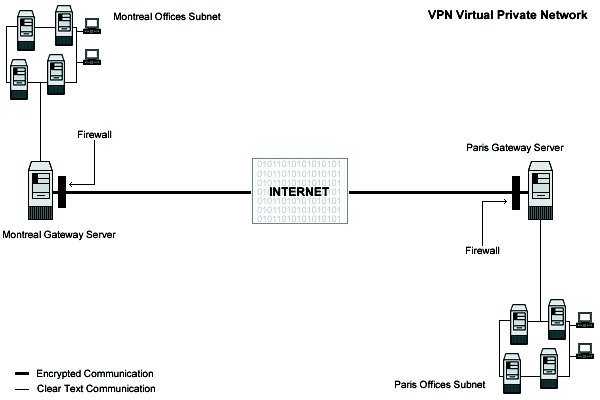

25.1. IPSEC/VPN -FreeS/WAN
IPSEC is Internet Protocol SECurity. It uses strong cryptography to provide both authentication and encryption services. Authentication ensures that packets are from the right sender and have not been altered in transit. Encryption prevents unauthorized reading of packet contents. IPSEC can protect any protocol running above IP and any medium used below IP.
IPSEC can also provide some security services in the background, with no visible impact on users. More to the point, it can protect a mixture of protocols running over a complex combination of media i.e. IMAP/POP etc. without having to change them in any ways, since the encryption occurs at the IP level.
IPSEC services allow you to build secure tunnels through untrusted networks. Everything passing through the untrusted net is encrypted by the IPSEC gateway machine and decrypted by the gateway at the other end. The result is Virtual Private Network or VPN. This is a network, which is effectively private even though it includes machines at several different sites connected by the insecure Internet.

These installation instructions assume
Commands are Unix-compatible.
The source path is /usr/src
Installations were tested on Red Hat Linux 6.1 and 6.2.
All steps in the installation will happen in super-user account root
Kernel version number is 2.2.14
FreeS/WAN VPN version number is 1.3
These are the Package(s) and available here
| Kernel Homepage: http://www.kernelnotes.org/ |
| You must be sure to download: linux-2_2_14_tar.gz |
| FreeS/WAN VPN Homepage Site: http://www.freeswan.org/ |
| FreeS/WAN VPN FTP Site: 194.109.6.26 |
| You must be sure to download: freeswan-1.3.tar.gz |
Before you decompress the tarballs, it is a good idea to make a list of files on the system before you install FreeS/WAN, and one afterwards, and then compare them using diff to find out what file it placed where. Simply run find /* > Freeswan1 before and find /* > Freeswan2 after you install the software, and use diff Freeswan1 Freeswan2 > Freeswan-Installed to get a list of what changed.
Some of the Prerequisites; the installation of IPSEC FreeS/WAN Virtual Private Network software requires some modification of your original kernel since FreeS/WAN must be included and incorporated in your kernel before you can use it. For this reason the first step in installing FreeS/WAN software is to go to the Linux Kernel section in this book and follow the instructions on how to install the Linux Kernel on your system, even if you have already done this before and come back to Linux FreeS/WAN VPN (this section) after you have executed the make dep; make clean commands, but before the make bzImage command in the Linux Kernel section.
 |
It is highly recommended that you not compile anything in the kernel with optimization flags if you intend to install the FreeSWAN software on your system. Any optimization flags added to the Linux kernel will produce errors messages in the FreeSWAN IPSEC software when it tries to run; this is an important warning you must note, or else nothing will work with FreeSWAN. The optimization flags documented in Configuring and Building a Secure, Optimized kernel apply without any problems to all sections and chapters of this book with the single exception of the FreeSWAN IPSEC software. Once again, I repeat, don't use or add any optimization options or flags into your Linux kernel when compiling and patching it to support FreeSWAN. |
To Compile FreeS/WAN you need to decompress the tarball (tar.gz).
[root@deep] /# cp freeswan-version.tar.gz /usr/src/
[root@deep] /# cd /usr/src
[root@deep ]/src# tar xzpf freeswan-version.tar.gz
[root@deep ]src# chown -R 0.0 /usr/src/freeswan-version
|